← All works

Physically-Based Shaders
Physically based shading in OpenGL: the Cook-Torrance model in a PBR pipeline, lit by environment maps, with custom scenes and models.
- Year
- 2023
- Type
- Individual project
- Built with
- C++, OpenGL, GLSL, Qt
- Reference
- Real Shading in Unreal Engine 4 (Karis, 2013)
Overview
Based on the paper “Real Shading in Unreal Engine 4”, the PBR implementation uses the Cook-Torrance model in a physically based rendering pipeline, along with image-based lighting, as well as custom scenes and environment maps.
- Material controlsAlbedo, metallic, roughness and ambient occlusion
- Surface detailNormal mapping and displacement mapping
- ScenesLoads environment maps, JSON scenes and OBJ models
Renders (RGB = 1, 1, 1)
-
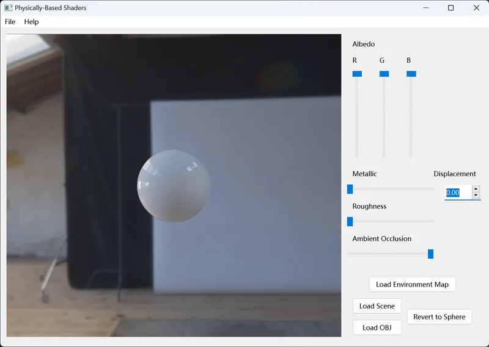
0 Metallic 0 Roughness -
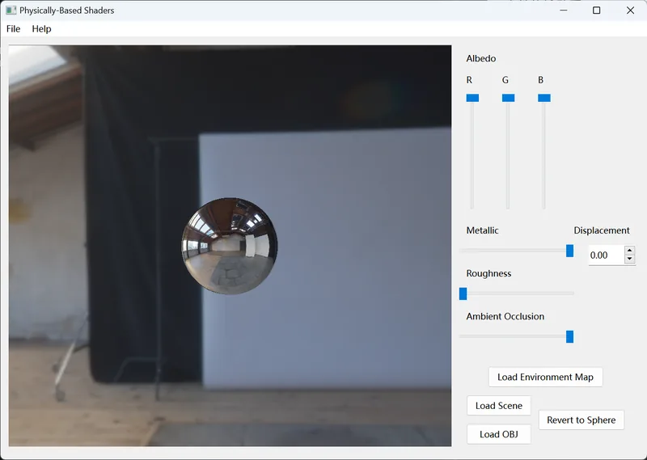
1 Metallic 0 Roughness -
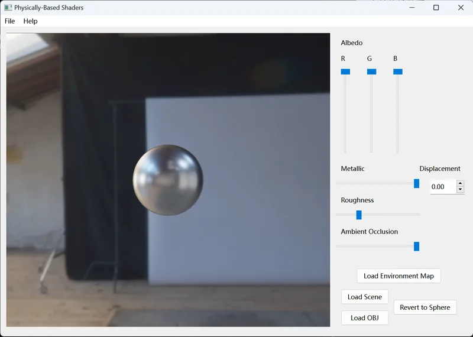
1 Metallic 0.25 Roughness


Renders (RGB = 0.5, 0, 0)
-
0 Metallic 0 Roughness -
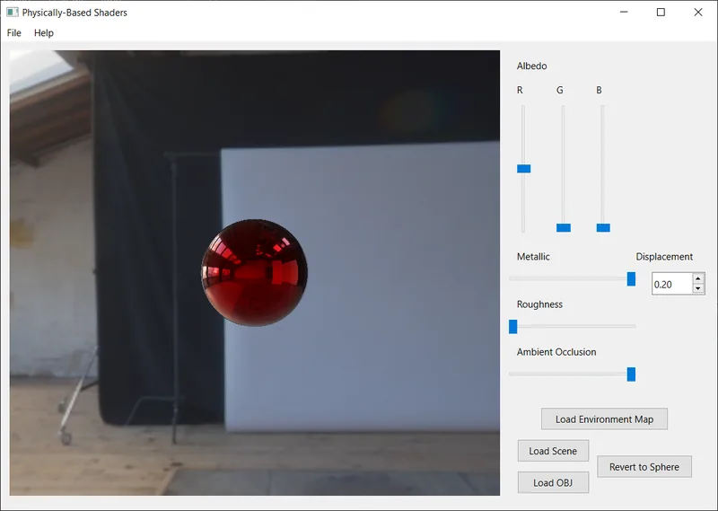
1 Metallic 0 Roughness -
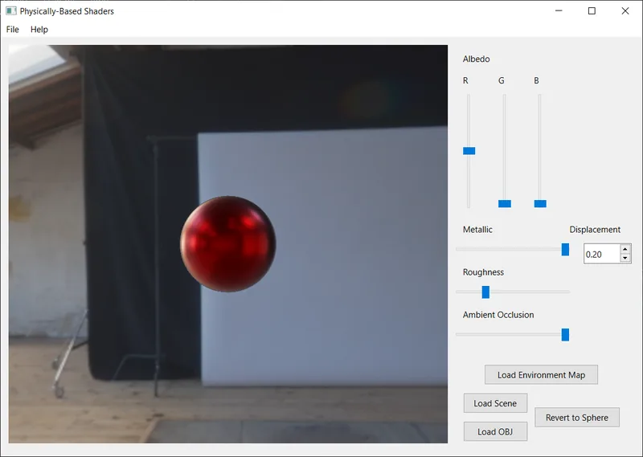
1 Metallic 0.25 Roughness -
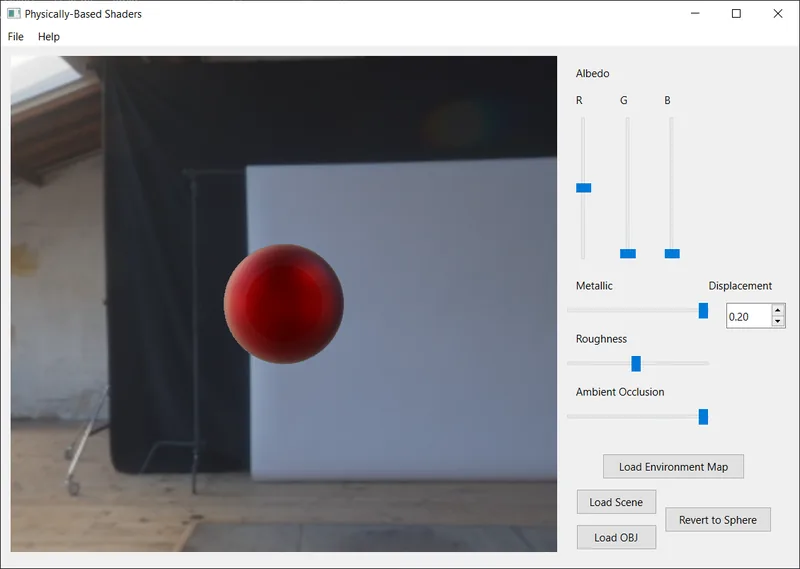
1 Metallic 0.5 Roughness -
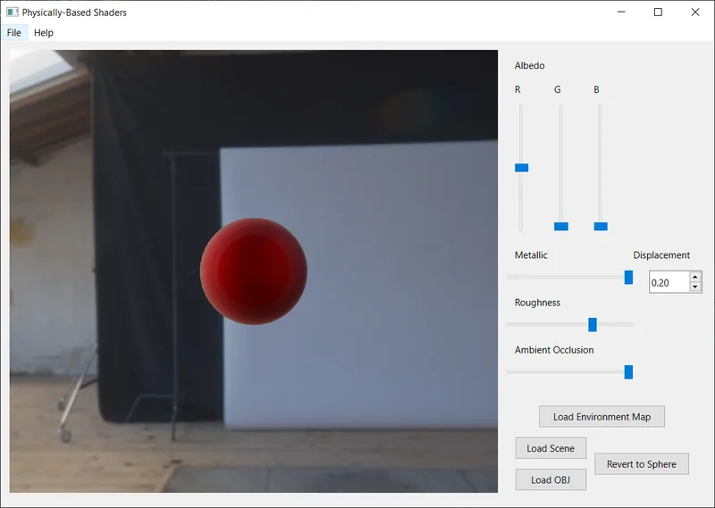
1 Metallic 0.75 Roughness -
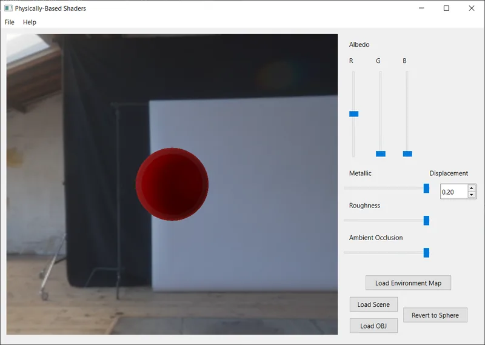
1 Metallic 1 Roughness


Normal Mapping and Displacement Mapping
-
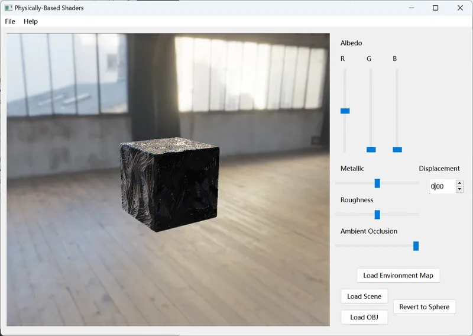
With no Displacement -
With 0.20 Displacement -
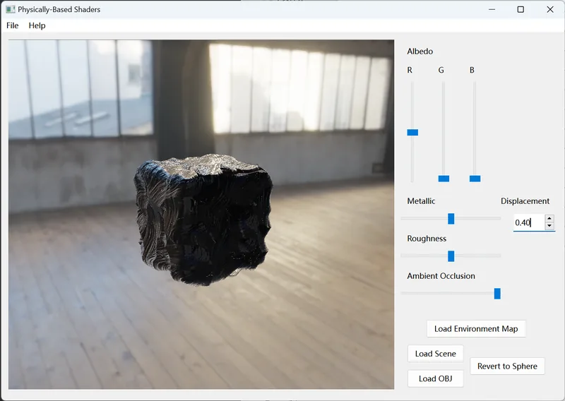
With 0.40 Displacement -
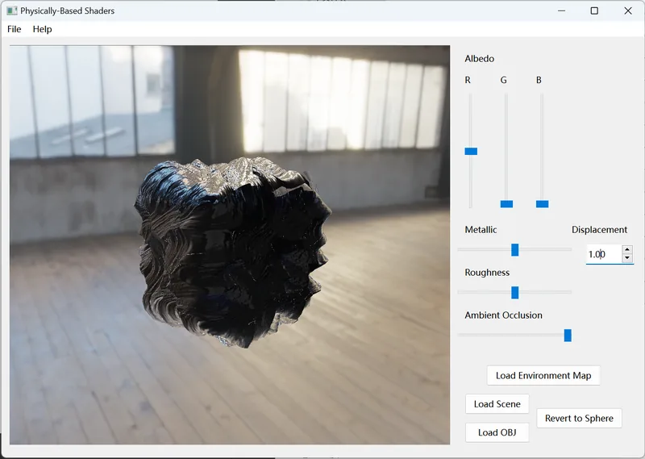
With 1.00 Displacement


Other JSON Scenes
-
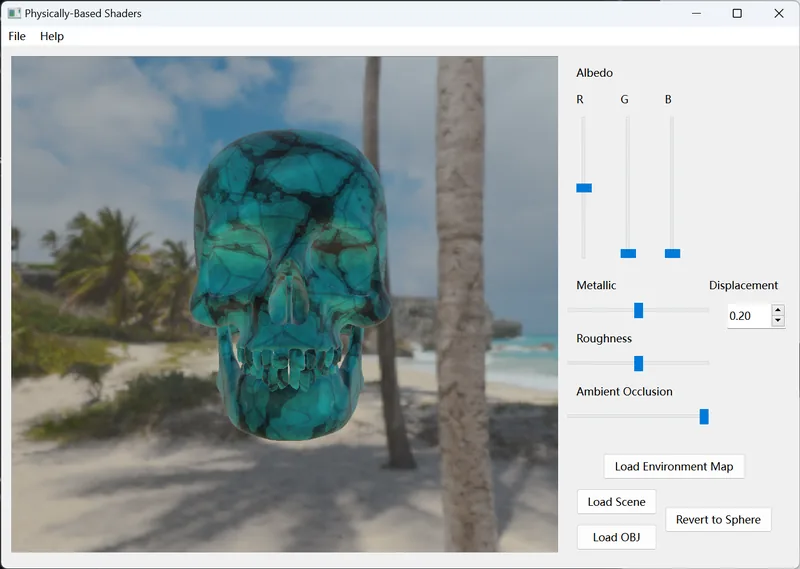
A Skull -
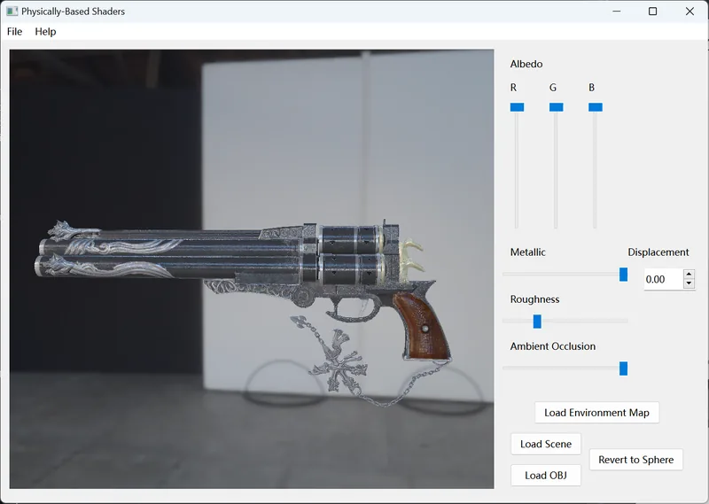
Gun